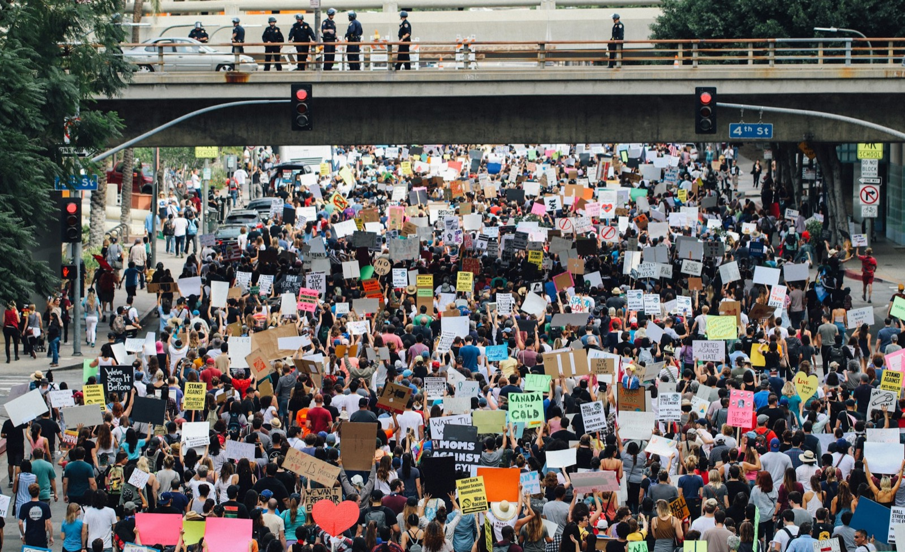

Beyond Passion: A Framework for Change
Activism Literacy moves beyond the initial passion that sparks a movement. It provides the crucial tools to analyze power structures, build strategic campaigns, and foster resilient communities. While passion provides the fuel, literacy is the engine that drives movements forward, ensuring that energy is channeled effectively toward clear, achievable goals. It is the bridge between righteous anger and transformative, lasting victory.
